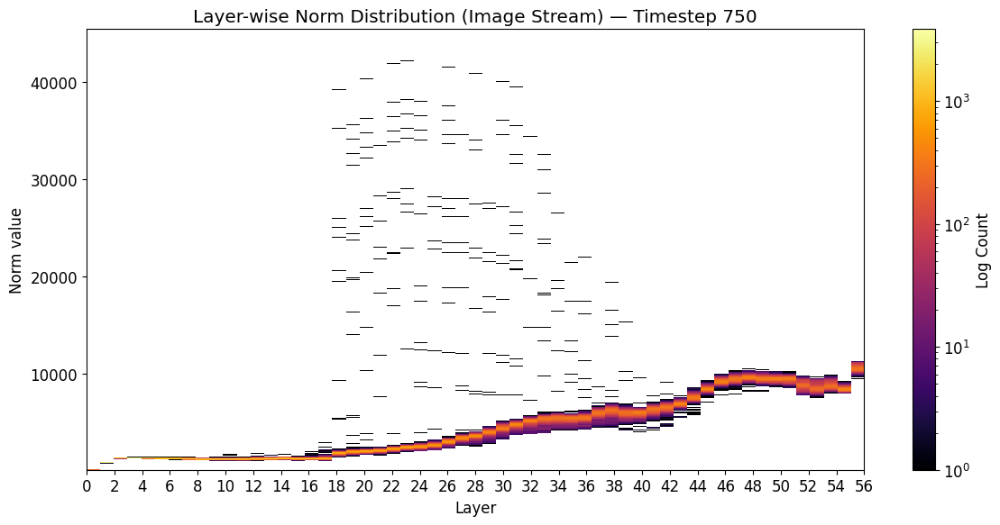

Sparse Structures and Causal Control in Diffusion Transformers
Investigating sparse internal structures in DiTs and whether targeted interventions can enable interpretable, selective control over model behavior, particularly for AI safety.
AI Researcher
I'm an AI researcher working on mechanistic interpretability for AI safety. I study how neural networks represent information internally and how causal interventions on those representations can explain and control their behavior, mostly in diffusion transformers and language models. Going forward, I'm interested in automated interpretability: building tools and agents that can carry out this kind of analysis at the scale of frontier models.
I am applying to PhD programs for Fall 2027.

| Oct 2026 | Three papers accepted at NeurIPS 2026 workshops: One Carrier Isn't Enough (AI4Good, first author), Evaluating LLM-Generated World Models (NEmo), and DUC-Bench (AI4Good and AISciK). |
|---|---|
| Sep 2026 | Reviewed for the NeurIPS 2026 AI4GOOD and WM-PAI workshops. |
| Jun 2026 | Joined the PRISM AI Safety Fellowship as a Research Fellow (Safe-by-Design AI), working with Jobst Heitzig. |
| May 2026 | Started a technical AI safety research project with BlueDot Impact on the robustness of linear refusal probes. |
| Feb 2026 | Graduated with a BS in Computer Science from COMSATS University Islamabad. |
| Nov 2025 | First-author paper Diffusion Transformers Use Sink Registers accepted at the AAAI 2026 XAI4Science Workshop. |
| May 2026 | Completed BlueDot Impact's Frontier AI Governance program. |
|---|---|
| Mar 2026 | Completed BlueDot Impact's AGI Strategy program. |
| Feb 2026 | Completed BlueDot Impact's Technical AI Safety course. |
| Sep 2025 | Founded ResearchCircle, an undergraduate research community that has grown to 700+ members. |
| Jul 2025 | Started mechanistic interpretability research on Diffusion Transformers at Algoverse. |

XAI4Science Workshop at AAAI 2026 First author
AI4Good Workshop at NeurIPS 2026 First author
NEmo Workshop at NeurIPS 2026
AI4Good and AISciK Workshops at NeurIPS 2026
Investigating sparse internal structures in DiTs and whether targeted interventions can enable interpretable, selective control over model behavior, particularly for AI safety.
Examining whether linear probes for refusal and evaluation awareness capture generalizable representations or rely on spurious features and distribution-specific correlations.
Investigating whether LLM-generated executable world models preserve decision-relevant structure and support reliable planning in partially observable multi-agent environments.
Building and evaluating an AI-agent research forum where agents autonomously discuss scientific papers, critique methodologies, and propose research directions, investigating whether collective discussion produces more useful and substantiated insights than independent analysis.
Evaluating whether VLA models' stated reasoning faithfully reflects their driving decisions, using counterfactual testing and reasoning–action consistency analysis.
Lead mechanistic interpretability research on Diffusion Transformers using causal ablations, activation interventions, probing, and attention and MLP analysis, which led to the first-author paper Diffusion Transformers Use Sink Registers. Also led a second direction on concept suppression in DiTs with steering vectors.
Worked with Jobst Heitzig on whether LLMs can construct executable formal world models for safe-by-design AI agents, developing and evaluating LLM-generated stochastic-game and partially observable stochastic-game representations.
Supported two research teams studying conflicting information in LLMs and AI preference drift during training, helping with technical and coordination blockers.
Investigated whether linear refusal probes capture genuine model representations or superficial prompt features.
Built a generative-AI platform that lets fashion businesses automate ad creation, with content moderation and campaign management. Code
Trustworthy AI for Good (AI4GOOD) and World Models in Physical AI (WM-PAI).
Founded and lead a 700+ member undergraduate research community spanning computer science, AI, mathematics, and physics. Run the AI safety group's paper readings, technical discussions, and workshops to build AI safety research capacity in Pakistan.